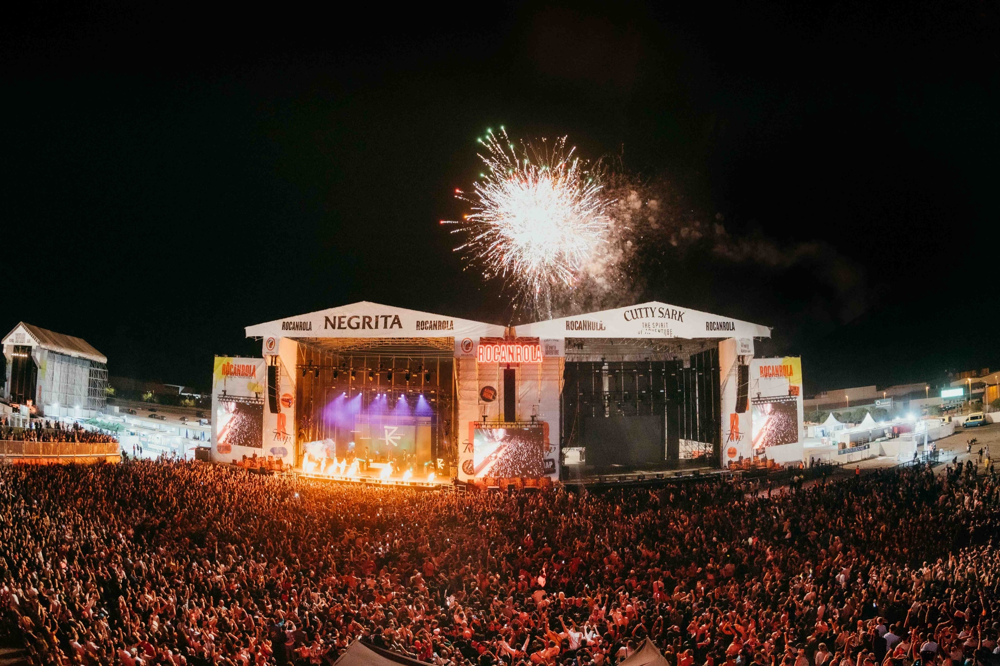

Cantantes confirmados y Horarios
Galería
Venta entradas
¿Donde nos encontramos?
Síguenos en nuestras redes sociales!
ROCANROLA FEST 2025
CADA SEGUNDO NOS ACERCA AL ESCENARIO
50
DÍAS
20
HORAS
10
MINUTOS
3
Segundos

Ver más
¿DONDE NOS ENCONTRAMOS?
¿Como llegar desde Oviedo?
Autobús:
Línea ALSA, 45 min, parada Castañera – La Morgal.
Tren:
Estación Lugo de Llanera, 12 min, 23 min a pie hasta el aeródromo.
Coche:
21,5 km, 23 min vía A-66 dirección Gijón.